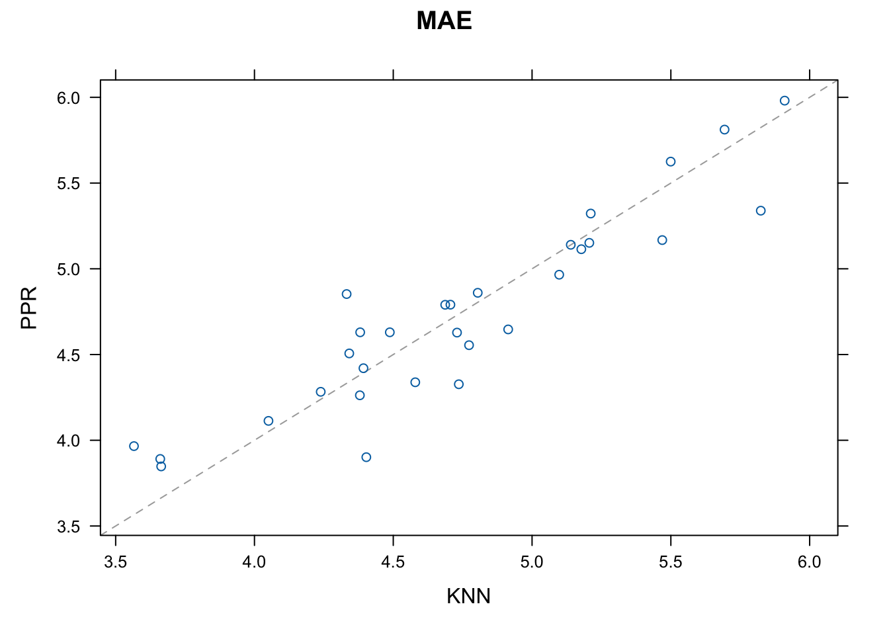

data("faithful")
# verificando a estrutura da base
str(faithful)'data.frame': 272 obs. of 2 variables:
$ eruptions: num 3.6 1.8 3.33 2.28 4.53 ...
$ waiting : num 79 54 74 62 85 55 88 85 51 85 ...Como já foi dito em capítulos anteriores, existem diversas formas de comparar preditores. Nesse capítulo, vamos estudar um meio de fazer isso e ver mais detalhadamente as medidas de comparação que o R retorna ao usarmos esse método.
faithfulVamos usar a base de dados faithful já presente no R.
data("faithful")
# verificando a estrutura da base
str(faithful)'data.frame': 272 obs. of 2 variables:
$ eruptions: num 3.6 1.8 3.33 2.28 4.53 ...
$ waiting : num 79 54 74 62 85 55 88 85 51 85 ...Note que a base apresenta apenas duas variáveis: eruptions, que contém uma amostra corresponde ao tempo em minutos que o gêiser Old Faithful permanece em erupção e waiting, que contém uma amostra correspondente ao tempo em minutos até a próxima erupção. Vamos tentar prever a variável waiting através da variável eruptions. Note ainda que a variável de interesse é quantitativa contínua, portanto queremos construir um regressor.
Vamos treinar nosso modelo utilizando 3 métodos separadamente: linear model, Projection Pursuit Regression e k-Nearest Neighbor. Para fazer a comparação, vamos colocar a mesma semente antes de cada treino para que todos sejam feitos da mesma forma e assim torne a comparação mais “justa”. Note também que estamos usando toda a base de dados pra treinar o medelo. Isso porque estamos apenas avaliando o melhor modelo.
library(caret)Loading required package: ggplot2Loading required package: lattice# usando o método de validação cruzada tiramos a dependência da amostra
TC = trainControl(method="repeatedcv", number=10,repeats=3)
set.seed(371)
modelo_lm = train(waiting~eruptions, data=faithful, method="lm", trControl=TC)
set.seed(371)
modelo_ppr = train(waiting~eruptions, data=faithful, method="ppr", trControl=TC)
set.seed(371)
modelo_knn = train(waiting~eruptions, data=faithful, method="knn", trControl=TC)Agora, como sabemos qual desses é o melhor modelo para nosso Regressor?
resultados = resamples(list(LM=modelo_lm, PPR=modelo_ppr, KNN=modelo_knn))
summary(resultados)
Call:
summary.resamples(object = resultados)
Models: LM, PPR, KNN
Number of resamples: 30
MAE
Min. 1st Qu. Median Mean 3rd Qu. Max. NA's
LM 3.816660 4.396526 4.723050 4.792316 5.063279 6.087023 0
PPR 3.847465 4.329571 4.638090 4.728487 5.133559 5.980745 0
KNN 3.565922 4.380002 4.717796 4.735160 5.167973 5.909983 0
RMSE
Min. 1st Qu. Median Mean 3rd Qu. Max. NA's
LM 4.769227 5.375918 5.919905 5.877351 6.204474 7.037539 0
PPR 4.775950 5.258969 5.871960 5.725215 6.099465 6.865713 0
KNN 4.564997 5.308376 5.828188 5.773268 6.275956 6.892789 0
Rsquared
Min. 1st Qu. Median Mean 3rd Qu. Max. NA's
LM 0.7232859 0.7855436 0.8198045 0.8154236 0.8443912 0.8715797 0
PPR 0.7461656 0.7964453 0.8243005 0.8241913 0.8567375 0.8812427 0
KNN 0.7636897 0.7964592 0.8227743 0.8218778 0.8453996 0.8771367 0Repare que foi calculada três diferentes medidas: “MAE”, “RMSE”, e “Rsquared”.
O Erro Médio Absoluto (MAE - Mean Absolute Error) é dado pelo média dos desvios absolutos. \[MAE = \frac{\sum\limits_{i=1}^{n}\mid estimado_i - real_i\mid}{n}\quad, i=1,2,...,n.\]
A Raiz do Erro Quadrático Médio (RMSE - Root Mean Squared Error), como o nome já diz, não é nada mais que a raiz quadrada do Erro Quadrático Médio já citado no capítulo de [Tipos de Erro]. \[RMSE=\sqrt{MSE}=\sqrt{\frac{\sum\limits_{i=1}^{n} \left( estimado_i-real_i \right)^{2}}{n}}\quad, i=1,2,...,n.\]
O Coeficiente de Determinação, Também chamado de \(R^2\) (R squared), é dado pela razão entre o MSE e a Variância subtraído de 1. \[R^2 =1- \frac{MSE}{Var}= 1-\frac{\sum\limits_{i=1}^{n} (real_i - estimado_i)^2}{\sum\limits_{i=1}^{n} (real_i - média)^2}\quad, i=1,2,...,n.\]
Portanto, queremos o modelo que possua MAE e RMSE baixo e \(R^2\) alto. Para vizualizar melhor, podemos construir um boxplot comparativo da seguinte forma:
# Ajustando as escalas dos gráficos:
escala <- list(x=list(relation="free"), y=list(relation="free"))
# Plotando os dados:
bwplot(resultados, scales=escala)

Pelos boxplots podemos perceber que o modelo linear é o que possui a pior mediana nas três medidas comparativas e parece ter os dados mais espalhados, principalmente no �2, o que indica que ele possui alta variabilidade. Quanto ao KNN e o PPR, os dados estão mais concentrados no RMSE e no �2, embora tenham bastante outliers. Parece que o PPR é levemente melhor que o KNN, mas é preciso uma análise mais profunda.
library(lattice)
# Comparando o comportamento de cada fold nos modelos KNN e PPR
xyplot(resultados, models=c("PPR", "KNN"))
Note que a maior parte dos folds está acima da diagonal, indicando que o KNN tem um erro absoluto médio (MAE) menor que o PPR. Vamos olhar novamente para o cálculo que fizemos mais acima.
resultados = resamples(list(LM=modelo_lm, PPR=modelo_ppr, KNN=modelo_knn))
summary(resultados)
Call:
summary.resamples(object = resultados)
Models: LM, PPR, KNN
Number of resamples: 30
MAE
Min. 1st Qu. Median Mean 3rd Qu. Max. NA's
LM 3.816660 4.396526 4.723050 4.792316 5.063279 6.087023 0
PPR 3.847465 4.329571 4.638090 4.728487 5.133559 5.980745 0
KNN 3.565922 4.380002 4.717796 4.735160 5.167973 5.909983 0
RMSE
Min. 1st Qu. Median Mean 3rd Qu. Max. NA's
LM 4.769227 5.375918 5.919905 5.877351 6.204474 7.037539 0
PPR 4.775950 5.258969 5.871960 5.725215 6.099465 6.865713 0
KNN 4.564997 5.308376 5.828188 5.773268 6.275956 6.892789 0
Rsquared
Min. 1st Qu. Median Mean 3rd Qu. Max. NA's
LM 0.7232859 0.7855436 0.8198045 0.8154236 0.8443912 0.8715797 0
PPR 0.7461656 0.7964453 0.8243005 0.8241913 0.8567375 0.8812427 0
KNN 0.7636897 0.7964592 0.8227743 0.8218778 0.8453996 0.8771367 0Podemos notar que o KNN tem uma posição melhor que o PPR em todas as medidas. Como saber se essa diferença é significativa? Vamos calcular as diferenças entre os dois modelos e avaliar atravé do p-valor.
#Calcular diferença entre modelos, e realizar
#testes de hipótese para as diferenças.
diferencas = diff(resultados)
summary(diferencas)
Call:
summary.diff.resamples(object = diferencas)
p-value adjustment: bonferroni
Upper diagonal: estimates of the difference
Lower diagonal: p-value for H0: difference = 0
MAE
LM PPR KNN
LM 0.063829 0.057156
PPR 0.18 -0.006673
KNN 1.00 1.00
RMSE
LM PPR KNN
LM 0.15214 0.10408
PPR 0.002181 -0.04805
KNN 0.422993 0.946570
Rsquared
LM PPR KNN
LM -0.008768 -0.006454
PPR 0.01111 0.002313
KNN 0.54786 1.00000 Observe que, para cada medida, acima da diagonal temos a diferença entre os modelos e abaixo da diagonal o p-valor do teste de comparação entre eles. Portanto, se considerarmos um nível de significância de 1%, é razoável dizer que os modelos PPR e KKN produzem resultados significativamente diferentes. Sendo assim, escolheriamos o método KNN para treinar nosso modelo.